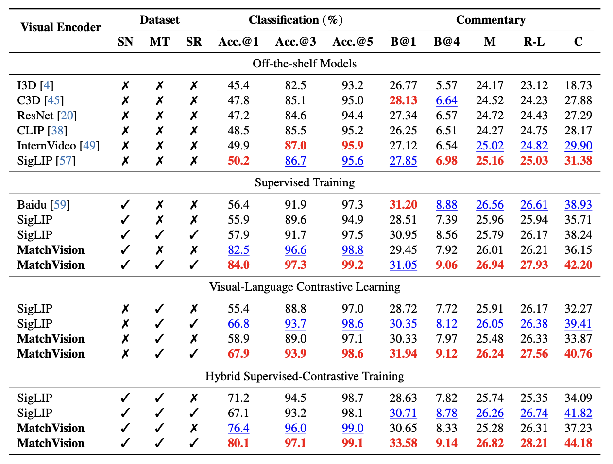

SoccerReplay-1988 Dataset

SoccerReplay-1988 Dataset Overview. Left: Data Curation Pipeline. The collected soccer video data are automatically processed for temporal alignment, event summarization, and anonymization by our curation pipeline; Right: Statistics of Soccer Datasets. Our SoccerReplay-1988 significantly surpasses existing datasets in both scale and diversity. Here, # Anno. and # Com. refer to the number of event annotations and textual commentaries, respectively.

Event Labels and Commentaries in SoccerReplay-1988. SoccerReplay-1988 dataset consists of full-match videos, event descriptions and match related information of 1,988 soccer matches. Left: Distribution of Event Labels of 24 Classes in SoccerReplay-1988. In our dataset, we summarized 24 classes of event labels for soccer senarios with second-level timestamps. Right: Word Cloud of Commentaries. For each event in our dataset, we also provide a textual commentary to describe events with more details.
Method

Overview of Our Proposed Soccer Visual Encoder: MatchVision. (a) The model architecture and its spatiotemporal feature extraction process; (b) Details of visual encoder pretraining, such as supervised training and video-language contrastive learning; (c) Implementation details of specific heads for various downstream tasks, including commentary generation, foul recognition, and event classification.
Results

Quantitative Results on Event Classification and Commentary Generation. Here, SN, MT, and SR represent curated SoccerNet-v2, MatchTime, and SoccerReplay-1988, respectively. Moreover, B, M, R-L, and C refer to BLEU, METEOR, ROUGE-L, and CIDEr metrics, respectively. Within each unit, we denote the best performance in RED and the second-best performance in BLUE.

Ablation Studies on Downstream tasks of Our New Benchmarks. Left: Event Classification. We explore the impact of various training settings of our MatchVision encoder on the SoccerReplay-test benchmark. Here, Sup., Contra., and SR refer to supervised training, visual-language contrastive learning, and SoccerReplay-1988 dataset, respectively.Right: Commentary Generation. We investigate the impact of different training strategies and datasets on MatchVision using the SoccerReplay-test benchmark. `V' and `L" denote the visual encoder and the LLM decoder, respectively, where ✔ and ✘ indicate whether each component was trainable.
Qualitative Results

Qualitative Results for Event Classification and Commentary Generation. GT denotes ground truth, while "w/o SR" and "w/ SR" indicate models trained without and with the SoccerReplay-1988 dataset, respectively. Training with the SoccerReplay-1988 dataset improves event classification performance. Specifically for commentary generation, this expanded training data enables the MatchVoice model to demonstrate notable advantages in (a) more detailed descriptions, (b) greater linguistic variety, (c) higher accuracy in event depiction, (d) better adherence to updated rules, and (e) improved specificity in scenario response.